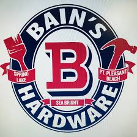

Intern
University of Maryland Athletics Media Relations - College Park, MD
February 2019 – January 2020
Chosen through a competitive interviewing process. The process concluded with a group interview involving the assistant directors of media relations for each University of Maryland varsity sport.
Worked in the office at XFINITY Center with supervisors to prepare for game-days, which can include creating flip cards and media credentials.
Delivered copy statistics to radio/TV announcers, cover postgame press conferences, and transcribe quotes for various Maryland media outlets on game-days.
Intern
Star News Group - Point Pleasant Beach, NJ
May 2019 – August 2019
Write, report, and edit copy for The Ocean Star newspaper, which covers six municipalities along the Jersey Shore. I wrote stories for a wide range of topics from features to sports to ‘People’ articles, which profiled local individuals of interest.
Interviewed subjects and researched to prepare for stories written by myself and other staff members.

Store Assistant
Bain's Point Hardware - Point Pleasant Beach, NJ
May 2020 – Present
Assisted customers in the store with questions about item locations, product functionality, and other troubleshooting issues.
Delivered grills and other expensive, fragile items to customers in the local Jersey Shore area.
Education
University of Maryland, College Park - Bachelor of Arts in Broadcast Journalism
GPA – 3.66
CIVICUS Living-Learning Program
Dean’s List, Alpha Lambda Delta and Phi Eta Sigma Honor Society
Skills
Adobe Premiere Pro
Video and Audio Editing
Microsoft Office (Word, PowerPoint, Excel)
Writing with Word
Presentations with PowerPoint
Data set creation and analysis with Excel
Adobe Audition
Audio Editing
Socials
tombsjeremy@gmail.com
GITHUB
https://github.com/tombsjeremy/
https://twitter.com/jeremy_tombs
https://www.linkedin.com/in/jeremy-tombs-01ba98115/